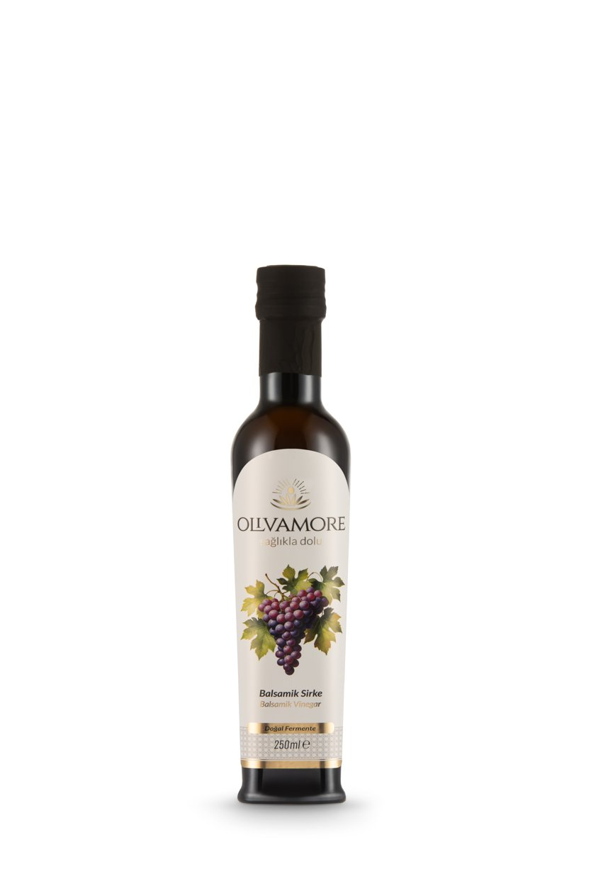

Tarif · Balsamik Bitiriş
Balsamikli Domates ve Mozzarella
Domatesin tatlı-asitli suyuna, sütlü mozzarella ve fesleğen eşlik eder; balsamik yalnız son dengeyi kurar.
10 dk · 2 kişilik

Domatesin tatlı-asitli suyuna, sütlü mozzarella ve fesleğen eşlik eder; balsamik yalnız son dengeyi kurar.
10 dk · 2 kişilik
Pişirme yok; yoğun tatlı-ekşi profili domates ve taze peynirde düşük dozla kur.
